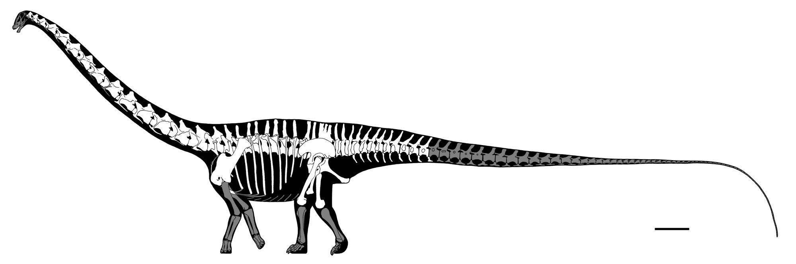

Diplodocus was a genus of diplodocid sauropod dinosaurs, whose fossils were first discovered in 1877 by S. W. Williston. The generic name, coined by Othniel Charles Marsh in 1878, is a Neo-Latin term derived from Greek διπλός (diplos) "double" and δοκός (dokos) "beam", in reference to the double-beamed chevron bones located in the underside of the tail, which were then considered unique. The Morrison Formation records an environment and time dominated by gigantic sauropod dinosaurs, such as Apatosaurus, Barosaurus, Brachiosaurus, Brontosaurus, and Camarasaurus. Its great size may have been a deterrent to the predators Allosaurus and Ceratosaurus: their remains have been found in the same strata, which suggests that they coexisted with Diplodocus.
